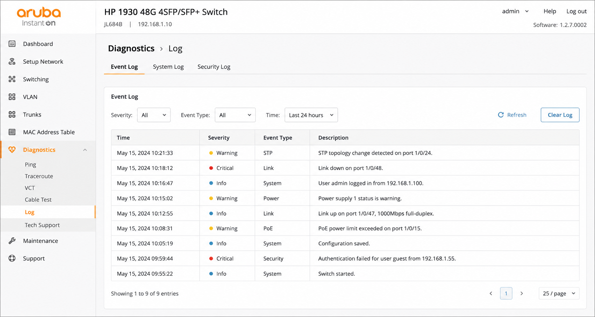

Tutorial – Network / Security
This check verifies that no critical errors or abnormal events are present in switch logs.
Switch log issues can indicate:
Open the switch management interface and review system logs.
HP Aruba → Diagnostics → Event Log
Verify that:
